Animation Editor
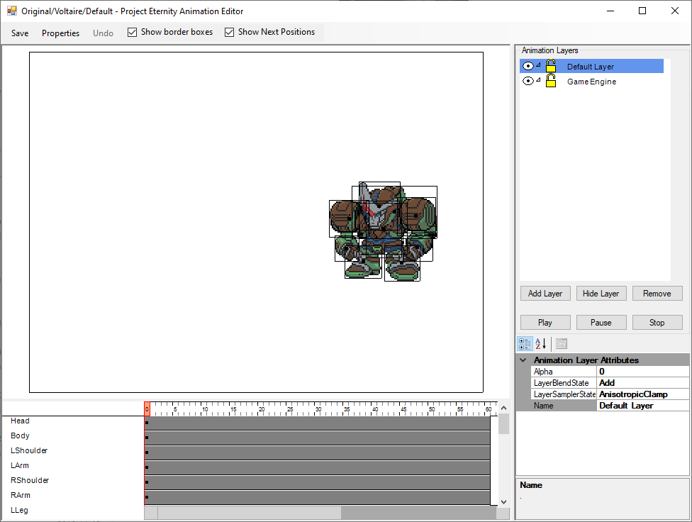Let’s start with
Properties at the top, it’s where you can set the size of the animation frame and how long it’ll last. For looping animations like if used inside a VN, you can also set where it’ll loop back to. You don’t really need to change the size of the animation for the use of battle animation. When you select something it will create a red rectangle to confirm the selection, you can hold shift or ctrl to select multiple items. Once you have that rectangle, you can move it around or move your mouse at the borders/corners to stretch or rotate. You can move the dot at the center to change the rotation center.
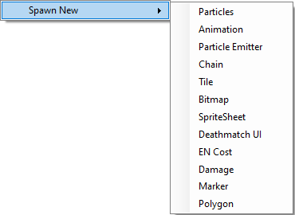In the center you have the animation viewer itself. You can right click to spawn new Timelines. Timelines are visible at the bottom and contains everything your animation need such as sprites, UI, damage numbers and enemy sprite. The way the animations work is by having timeline add objects to a blank canvas so if you delete a timeline the object will stay on screen until you restart the animation.
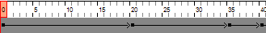Timelines consist of 3 things: A start frame, keyframes and a death frame. You can move the first keyframe to change the start of the timeline. You can move the end of the timeline to change when it stop, you can drag the entire timeline around as well. You can also drag keyframes to adjust them. You can click on a keyframe to select it and edit its attribute in the bottom right corner.
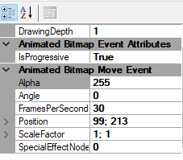Let’s go over the Keyfame attributes.
Drawing Depth: It defines what goes on top and what is under. 0 means it will be drawn on top of everything and 1 will be under everything. You’ll usually want to keep the 0 value for the HUD so you can start at 0.001 instead without worries.
IsProgressive: If it’s true, the transition between keyframes will be smoothed over, sort of like tweening. If false it just just teleport the sprite with no transition.
Alpha: Opacity, 255 for full opaque and 0 for invisible.
Angle: Rotation value in radians, useful to copy/paste but if you want to rotate something it would be better to use rotate the sprite with the mouse.
Position: X, Y position of the item in the animation.
ScaleFactor: X, Y scale value, useful to make things bigger of have them flipped.
SpecialEffectNodes: This one is complicated, you can have green points between movements that will act like weight that drag the sprite towards it. It works by making the sprite move with a curve instead of a straight line.
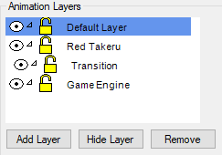Last step before looking at the battle animations, the Layers.
You can add or remove layers as needed. They are drawn individually and will not impact the other layers unless you’re using a sub-layer. To make a sub-layer you simply drag a layer on top of another one. In this example you have the Transition layer that is a sub-layer of Red Takeru. This allow for some fancy interactions like having the sub-layer erase part of its parent layer. Because each layer are independent, it will also on impact its parent so no worries about accidentally something you don’t want to.
You can click on the eye before each layer to hide it, click again to make it visible. Click on the padlock to lock the layer, this will prevent you from moving objects in the viewer when that layer is selected. Click again to unlock it.
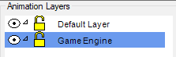 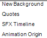Now that you know how animations are made, you need to take a look at the Game Engine layer on the right. When you select it you can see 4 timelines, Background, Quotes, SFX, Animation Origin.
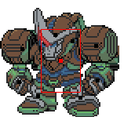 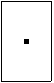Out of the 4, Animation Origin is the most important, if you’re wondering what it looks like, it’s the empty rectangle. As for what it does, it depends of context. In a battle animation, you should put it in the center of your unit, that way when you include an enemy you’ll know the unit is always centered around the enemy object you added. In Visual Novels, it’s used to define where the bottom of the animation is so it can move your sprite to the top of the dialog box at the bottom.
If you ever find that your animations are off center, it’s probably because you forgot to set the animation origin.
The Background timeline just let you set the speed and rotation on keyframes.
The SFX timeline will let you play sound with keyframes.
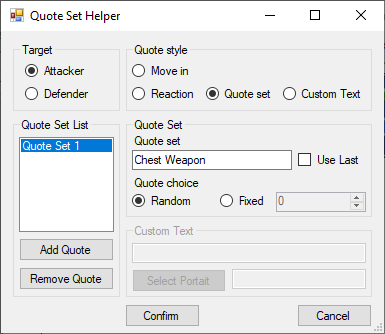The
Quotes timeline will let you change the dialog on a keyframe.
You select who’s talking, attacker or defender, then the dialog to use. Move in and Reaction are correspond to the ones defined in the character editor. Reaction will pick the corresponding reaction for miss/hit/destroyed/etc. Quote set let you pick a quote set you defined. Here we’re using the Chest Weapon one we create earlier. You can choose to use a random line from the list linked to that quote set or a specific one. Custom Text let you write your own text with your own portrait. As for the Quote Set List, it let you define multiple different reactions, the engine will pick one of them at random if there’s more than one.
Default Animation
We’re now at making actual animations. Before starting you need to be aware that
every animations of the same unit must set their animation origin to the same position. The reason for that is simple: Counterattack animations. To be exact, you can probably make do by not having the origin in the same position but you’ll hate every second of it. For the sake of this example, we’ll set the animation origin to 500; 250. This also correspond to 140; 250 when flipped for a counterattack(Because 640 – 500).
Now let’s talk about the Default Animation itself. It’s basically the idle state of your unit. When it’s used as the enemy for an attack it’ll use the default animation to represent your unit. If you didn’t do any animation for move in and other, the game will use that animation for the generic move in animation. If you want to play with generic animation, they’re all in the Default Animations folder.
Add sprites around the origin until you have your animation, you can animate it you want instead of being a static sprite, just remember when it’s used.
As always,
don’t forget to set the End Loop frame. It’s also recommended to have at least 2 frames in your animation, even if it’s just a static image. Not much for quality reason but it will avoid looping an animation of 1 frame every frame.
Another thing to not is that since this animation is used inside other animations, you don’t want to have a HUD timeline here.
Move in Animation
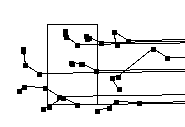 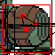This animation is having your unit from the right side and stopping to a position before starting the attack sequence. Add dialog if wanted.
There is nothing in particular to watch out except the end loop frame and add the HUD timeline.
The first frame of your animation will probably look like that after you’re done:
We’ll use this opportunity to explain what’s going on here. Each point represent a position of sprite on a keyframe.
For example we’ll use the shoulder. You can see that it will come from the right, move in diagonal up left and then go back down right.
If you don’t want those lines you can always uncheck the Show Next Positions checkbox.
Once you’re done you’ll want to copy this animation and only keep the last frame, that way you’ll be able to copy this new animation and always be ready to start from a known position and ensure there’s no rough transition when the attack animation start.
Attack Start Animation
Just like the Move In Animation, the Attack Start Animation is pretty harmless. Copy that final frame from the Move In Animation to ensure you start at the right place and then you’re free to do what you want. Add dialog if wanted.
This animation is just your unit starting the attack, the enemy is not visible yet. There’s an implied camera transition at the end before starting the next animation so nothing carry over.
Normally those animations are divided between 2 categories: Shoot projectiles to the left or move the unit off screen to the left.
If it’s some super attack you can always add a cut-in of the pilot yelling to make it more memorable.
End Hit/Miss/Destroyed Animation
There’s multiple End Animations but we’ll focus on End Hit as you can just copy/paste it to make the others. Normally Miss animation means you don’t show damage numbers and Destroyed means you add an explosion.
This is were we’ll introduce
Marker timelines. Markers are used to import other animations inside your animation. For our purposes we’ll need to include the enemy default animation. So let’s start by making a marker.
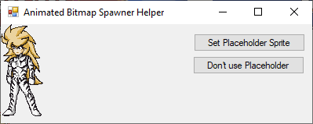 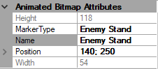The first thing to do is to pick a placeholder, it’s not required but highly recommended. After being created you can select and edit its properties. You’ll have one field in particular that need attention,
MarkerType.
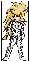 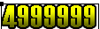 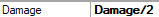The type of the marker will determine what you’ll get, you can use Enemy Stand to have the game replace the marker with the enemy default animation. If you move the marker, it will also move the enemy. You can also use Enemy Hit or Player Stand. If you need more you can use “Player” followed by anything and it will load the corresponding animation. As such “Player Voltaire/Jump” would load an animation named Jump in the Voltaire folder.